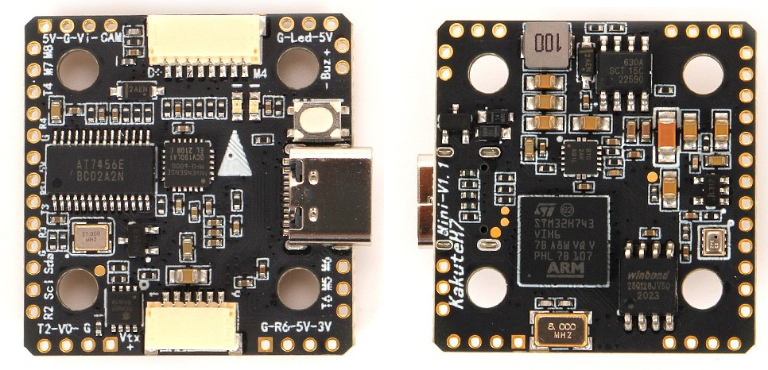
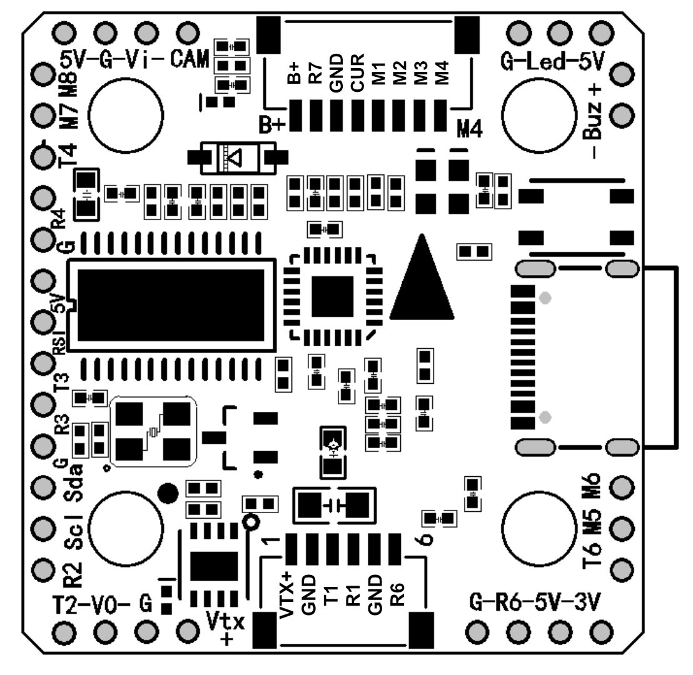

Holybro Kakute H7 Mini V1.3¶
above image and some content courtesy of Holybro
Specifications¶
Processor
STM32H743 32-bit processor
AT7456E Video processor for OSD
16MB data flash for logging
Sensors
MPU6000 (accel & gyro)
BMP280 barometer
Power
7V ~ 26V input power directly from battery
5V 2A supply for peripherals
Interfaces
9x PWM outputs (8 servo/motor + WS2812 LED)
6x UARTs/serial for GPS and other peripherals
1x I2C port for external compass
Battery Voltage and Current Sensor inputs
USB-C port
Switchable VTX power
Analog RSSI input (pin 8)
Buzzer output
Where to Buy¶
Available from many retailers including Holybro
Pinout¶
{kind=link}
UART Mapping¶
The UARTs are marked Rn and Tn in the above pinouts. The Rn pin is the receive pin for UARTn. The Tn pin is the transmit pin for UARTn.
SERIAL0 -> USB
SERIAL1 -> UART1 (Telem1)
SERIAL2 -> UART2 (Telem2) No DMA
SERIAL3 -> UART3 (GPS)
SERIAL4 -> UART4
SERIAL6 -> UART6 (used for RC input and RC telemetry, PPM is not supported)
SERIAL7 -> UART7 (Receive only, ESC Telemetry) No DMA
RC Input¶
RC input is configured on the R6 (UART6_RX) pin. It supports all RC protocols except PPM. See Radio Control Systems for details for a specific RC system. SERIAL6_PROTOCOL is set to “23”, by default, to enable this.
SBUS/DSM/SRXL connects to the R6 pin but SBUS requires that the SERIAL6_OPTIONS be set to “3”.
FPort requires connection to T6 and SERIAL6_OPTIONS be set to “7”.
CRSF also requires a T6 connection, in addition to R6, and automatically provides telemetry. Set SERIAL6_OPTIONS to “0”.
SRXL2 requires a connection to T6 and automatically provides telemetry. Set SERIAL6_OPTIONS to “4”.
Any UART can be used for RC system connections in ArduPilot also, and is compatible with all protocols except PPM. See Radio Control Systems for details.
OSD Support¶
The KakuteH7 Mini supports OSD using OSD_TYPE 1 (MAX7456 driver).
PWM Output¶
The KakuteH7 Mini supports up to 9 outputs. M1 to M4 are accessed via the connector and are bi-directional capable. M5-M8 and LED are the pads shown on the above diagram. M1-M8 and LED outputs support DShot as well as all PWM types. The PWM is in 5 groups:
PWM 1,4 in group1
PWM 2,3 in group2
PWM 5,6 in group3
PWM 7,8 in group4
PWM 9 in group5 (NeoPixel LED by default)
Channels within the same group need to use the same output rate. If any channel in a group uses DShot then all channels in the group need to use DShot.
Battery Monitoring¶
The board has a built-in voltage sensor. The voltage sensor can handle up to 6S LiPo batteries. An external current sensor can be attached to pin 4 on the ESC connector.
The correct battery setting parameters are:
BATT_MONITOR 4, if external sensor used; 3 for voltage only
BATT_CURR_PIN 11 , if external sensor used.
BATT_VOLT_MULT 11.1
BATT_AMP_PERVLT should be set to match external current sensor, if used. For example, if the Holybro Teeko32 4in1 ESC is used, this value would be 59.5
Note
these values are already set by default, but can be changed to trim the voltage and/or current as needed, or to suit other ESCs.
Compass¶
The KakuteH7 Mini does not have a built-in compass, but you can attach an external compass using I2C on the SDA and SCL pads.
Logging¶
The KakuteH7 Mini supports on-board data flash logging.
Loading ArduPilot onto the board¶
Initial firmware load can be done with DFU by plugging in USB with the bootloader button pressed. See Loading Firmware onto boards without existing ArduPilot firmware
Firmware¶
Firmware for this board can be found here in sub-folders labeled “KakuteH7Mini”.
[copywiki destination=”plane,copter,rover,blimp”]